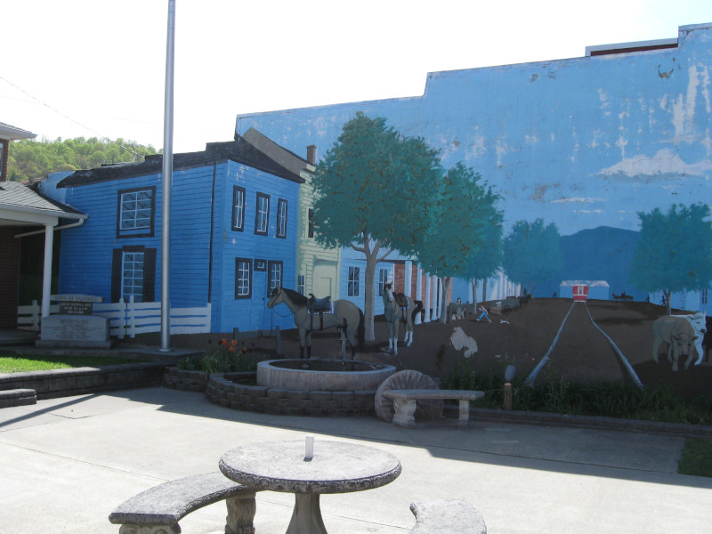
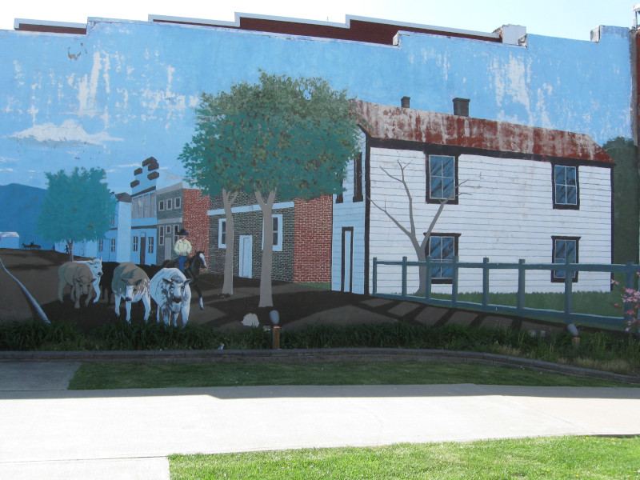

Many towns around this area have murals decorating old buildings, some simple, some very complex. I have a few pictures of both types I will share with you. I'll start with a simple example.
Tazewell, Viginia


Many towns around this area have murals decorating old buildings, some simple, some very complex. I have a few pictures of both types I will share with you. I'll start with a simple example.

I'm not sure but I think the man on the right wearing the blue jacket is the artist, and if you read the blocks in the windows from the bottom up it spells out his childrens names.
There is a company in the Tri-State area (Virginia, Tennessee, Kentucky) that employed a sculpted brick artist by the name of Johnny Hagerman. I have pictures of a few examples of his work. The largest is The Jack Tales Wall at Southwest Viginia Community College. This work of art is two stories tall and quite wide.